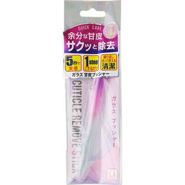
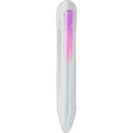

返回列表
产品名称：ビューティワールド キューティクルリムーブスティック

トレンディハウス ビューティワールド キューティクルリムーブスティック ＿
メーカー トレンディハウス
JANコード 4537715960245
商品の特徴
硬くなった甘皮をさくさく除去するガラスプッシャーです。
汚れにくいフロントガラスで１ステップで除去出来ます。
成分・分量
【素材】
本体：ガラス
カバー：ＰＶＣ
用法及び用量
【使用方法】
１、爪根元の甘皮をゆっくり押し上げながらくるくるこすって角質を取り除いて下さい。